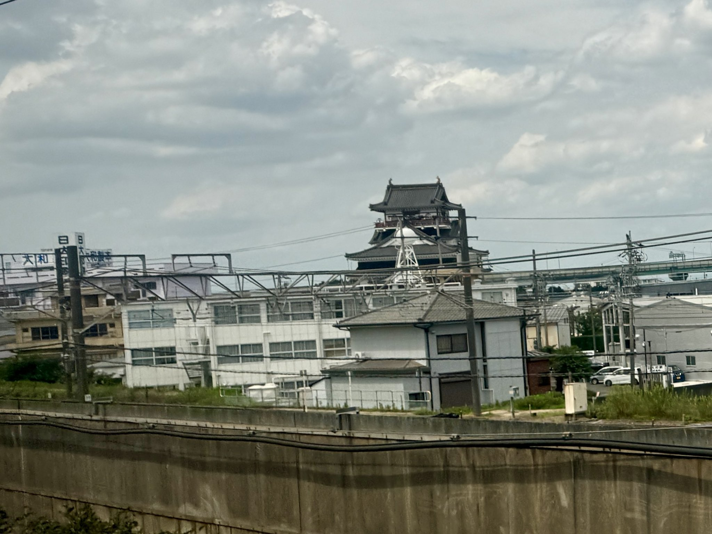

TOKAIDO SHINKANSEN WINDOW VIEW
清洲城は新幹線から見える？
信長の城が、線路のすぐ横に。

- 見える区間
- 名古屋 → 岐阜羽島
- 座席側
- E席・山側
- タイミング
- 東京発のぞみ基準で約99分後
- 写真
- 3枚
清洲城の見つけ方
名古屋を出て数分、線路のすぐ近くに清洲城があらわれます。織田信長が天下取りを始めた城、そして「清洲会議」の舞台。新幹線がいちばん城に近づく瞬間かもしれません。
東京から新大阪方面へ向かう場合は、名古屋 → 岐阜羽島が近づいたらE席・山側の窓を少し早めに見てください。新大阪から東京方面へ向かう場合は、通過順が逆になります。
東海道新幹線の車窓としてのポイント
清洲城は、富士山だけではない東海道新幹線の車窓を楽しむための見どころです。列車の速度が速いため、見える時間は短く、天気や座席位置によって見え方が変わります。
参考リンク
English: Kiyosu Castle is a Tokaido Shinkansen window view around Nagoya → Gifu-Hashima. A few minutes out of Nagoya, Kiyosu Castle appears startlingly close to the line. This is where warlord Oda Nobunaga began his rise to power. It may be the closest the Shinkansen ever gets to a castle.